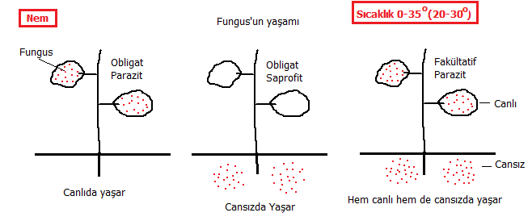
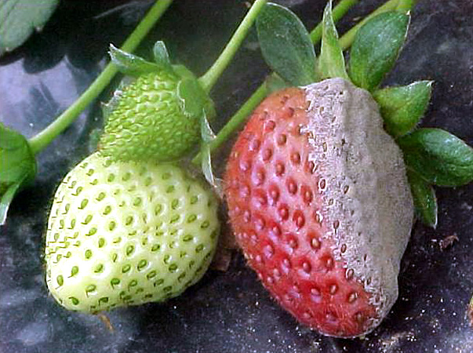
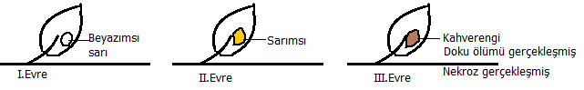
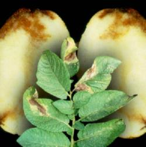
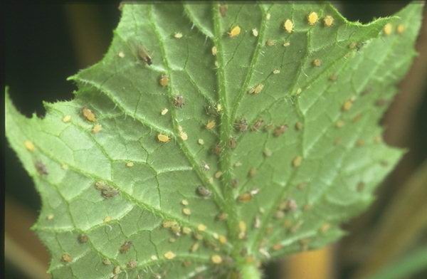
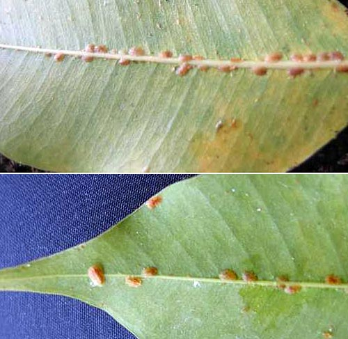
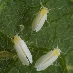
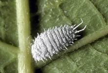
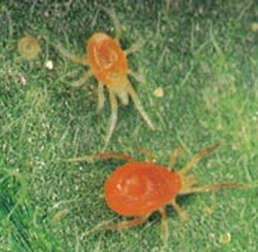

Fungus (mantar – enfeksiyon mantarları)
Bakteri – Örnek olarak salkım söğüdün dallarında oluşan yumrular
Virus – Gül ve defne yaprağının Akuba yaprağına benzer şekilde beneklenmesi
Bütün yüksek bitkiler mutlaka birkaç fungusun tehdidi altında bulunmaktadır.
Yüksek bitki : Kök, gövde, yaprak ve çiçek olmak üzere dört ana bölümden oluşur (tüm organları barındıran).
Funguslar tek başlarına bitkiler üzerinde büyük kayıplar meydana getirirler.
Sıcaklık 0-35 oC arasında yaşayabiliyor. En uygun sıcaklık aralığı 20-30oC dir. Neme ihtiyacı var.
Funguslar, canlı organizmalar (obligat parazit) yada ölü organik maddeler üzerinde (obligat saprofit : ölü yaprak, gübre v.s.) yaşamsal faaliyetlerini sürdürebilirler. Fakültatif parazit, hem ölü, hem de canlı organizmalar üzerinde yaşar. Funguslar, üremeleri ve gelişmeleri için yüksek neme ihtiyaç duyarlar.
Fungus'un konukçu bitkilerde oluşturdukları semptomlar:
1. Konukçu bitkide lokal, genel nekrozlar (ölümler).
2. Bitki organlarının veya tamamının cüceleşmesi.
3. Bitki organlarının veya tamamının anormal büyümesi.
Nekrotik semptomlar: Kök çürüklüğü, kök boğazı çürümesi, baygınlık, kanser, yaprak lekeleri, Mildiyö, çürüklük
Bitki organlarının bozulması ile ilgili semptomlar
Kök uru
Tümör
Nasır
Yaprak kıvırcıklığı
Tanımı
Fungus bir zayıflık parazitidir. Uygun koşullar sağlandığında ancak konukçu bitkiyi hastalandırır. 20-25oC sıcaklık, yüksek nem, kötü havalandırmanın olduğu yerlerde kurşuni küfün yayıldığı görülmektedir.
Belirtileri
1. Kurşuni küf etmeni, her konukçuda değişik görünüşte hastalık tablosu oluşturur. Özellikle gövde ve meyve enfeksiyonları oluşturur.
2. Soğan yumruları üzerinde kurşuni renkli küf tabakası görülür (gri tozlu fungal örtü).
3. Yumru ve meyvelerde yumuşak çürüklük.
4. Özellikle sebzelerde sapta oluşan lezyon (enfekte olması) sonucu meyvelerde dökülme.
Mücadelesi
Kültürel mücadele
1. Temizliğe çok dikkat edilmeli (alet, ekipman, budama makası, tırmık gibi herşey).
2. Özellikle hasat sonrası, bitki artıkları alandan uzaklaştırılmalıdır.
3. Hastalıktan zarar görmüş bitkiler imha edilmelidir.
4. Bitkiler havadar ortamda birbirlerinden yeterli uzaklıkta bulunmalıdırlar.
Kimyasal mücadele
Kurşuni küf – Fungus – Fungusit
İlaçlamalar hastalık belirtisi görülür görülmez yapılmalıdır. İlaçlamalar 10 gün ara ile bir kaç kez tekrarlanabilir. Son ilaçlamalar ile hasat arasında en az 15 günlük bir sürenin olmasına dikkat edilmelidir.
Belirtileri
1. Daha çok tohumların çimlenmesinden sonraki safhada, fide devresinde sık görülen bir hastalıktır.
2. Fide devresinde fidelerin toprakla temas eden kök boğazından itibaren devrildikleri görülür.
3. Kök boğazı incelir, hassaslaşır ve bitki ayakta durma yeteneğini yitirir.
4. Fidelerin ölmesine sebep olur. Yani hastalık nektrotiktir.
5. Toprak yüzeyi bazen fungus iplikçikleri ile kaplanır.
6. Etmeni fakültatiftir (hem canlı hem cansızda yaşar).
Ortaya çıkış nedenleri
1. Yüksek toprak nemi
2. Yetersiz ışıklandırma
3. Yetersiz havalandırma
4. Sık dikim-ekim
5. Kötü tohum kullanımı (sertifikalı ve steril tohum kullanılmalı)
Kültürel mücadele
1. Taban suyu seviyesi yüksek olan yerlerde ekim-dikim yapılmamalıdır (çoğu bitki için geçerli) yada fazla su tahliye edilmelidir.
2. Aşırı sulamadan kaçınılmalıdır.
3. Gereksiz, aşırı gübrelemeden kaçınılmalıdır.
4. Hastalıklı fideler ve enfekteli harç uzaklaştırılmalıdır (harç = ortam malzemesi = perlit, dere mili vs).
5. Kullanılan araç ve gereçler sterilize edilmelidir.
Kimyasal mücadele
Kimyasal mücadelede ilaçlamalar:
1. Tohum ilaçlaması
2. Fide ilaçlaması
3. Toprak sterilizasyonu
olarak uygulanabilir.
Belirtileri
Yaprağın alt yüzeyinde beyaz, tozlu, yaprak yüzeyinde çamaşır suyuna benzer lekeler, fungal bir örtü oluşturan funguslar ortaya çıkar. Yaprağın üst yüzeyinde önce solgun sarı, sarımsı, keskin sınırları olmayan lekeler oluşur. Hastalık ilerledikçe lekelerin rengi kahverengi-siyaha doğru koyulaşabilir (3. evre).
Hastalık yapraklardan meyvelere de geçebilir. Meyvedeki lekeler, yapraklardaki lekeleri andırır.
Kültürel mücadele
1. Gereksiz sulamadan kaçınılmalı.
2. Sık dikim yapılmamalı, yapılmış ise seyreltilmelidir.
3. Tohumlar sık ekilmemelidir, tohum temizliğine dikkat edilmelidir.
4. Aşırı gübreleme yapılmamalıdır.
5. Ortam malzemesinin sterilizasyonuna dikkat edilmelidir.
6. Hastalıklı bitkiler toplanıp alandan uzaklaştırılmalıdır.
7. Sürekli yabancı otlarla mücadele yapılmalıdır. (Yabancı ot mücadelesi önemlidir. Sulama ve dikim aralığından sonra üçüncü sırada).
Kimyasal mücadele
NOT: Sebzelerde oksijenli su; bire bir oranında karıştırılarak. Aspirin sulandırılıp verilebilir; 1 bardak suya 1 aspirin ölçeği kullanılarak.
1. Kimyasal mücadeleye hastalık belirtileri görülür görülmez başlanmalıdır
2. Mildiyö enfeksiyonları yaprakların alt kısmında oluştuğundan ilaçlamalar mutlaka yaprakların alt yüzeyinden ve bitkinin her tarafına ilaç gelecek şekilde uygulanmalıdır. (1 kere ilaçlamak her zaman yeterli olmayabilir.) İlaçlamalar 10 gün ara ile hastalığın şiddetine göre tekrarlanabilir. Hasattan 15 gün önce ilaçlama kesilmeli, yapılmamalıdır.
Tanımı
Fungus özellikle yaprak, sürgün, çiçek demetleri ve bazı meyvelerde meyveler üzerinde gelişerek unsu, beyaz, tozlu bir örtü oluşturmaktadır.
Primer (birincil) enfeksiyon (uyanma)
Sekonder (Ikincil) enfeksiyon (yayılma)
Funguslar genel olarak kışı sıcaklığı 0o altına düşmeyen yerlerde rahatlıkla geçirebilirler. Sıcaklığın artması ile ortama yayılan funguslar primer enfeksiyonu başlatır. Funguslar vejetasyon dönemi havaların ısınması, rüzgarlar, böcekler ve çeşitli mekanik hatalar ile etrafa yayılarak sekonder enfeksiyonu oluşturur.
Belirtiler
1. Hastalık meyve ağaçlarında özellikle yaprak, çiçek sürgünü ve meyvelerde görülür. Sebzelerin daha çok yapraklarında, süs bitkilerinde ise yaprak, yaprak sapı, çiçek yapraklarında görülür.
2. Küllenme daha çok bitki organlarının üst yüzünde unsu bir örtü şeklinde gösterir.
3. Fungus zayıflık parazitidir. Hastalığa daha çok genç bitki organları yakalanır. Hasta yaprak normal olarak gelişemez, daralır. Hafifçe kıvrılmış bir görüntü alır.
4. Hastalık olan bitkilerin renkleri zamanla kahverengiye dönüşür (zamanla nekroz gelişir)
Küllenmiş çiçekler çoğunlukla gelişimini tamamlıyamazlar.
Hastalığın bitkiye etkisi
1. Küllenme hastalığı yaprakların normal olarak fotosentez yapamaması sonucu sürgünlerin zayıflamasına
2. Çiçek goncalarının açmamasına
3. Var ise meyvelerin küçük ve şekilsiz kalmalarına sebep olur.
Mücadelesi
Kültürel mücadele yöntemleri
1. Gereğinden fazla sulamadan kaçınılmalıdır. Özellikle ağır topraklarda çapalamaya önem verilmelidir.
2. Gübreleme ve toprakla ilgili uygulamalar bitkinin isteği doğrultusunda yapılmalıdır.
3. Sık dikimden ve bitkinin havalanmasını engelliyecek budama şeklinden kaçınılmalıdır.
4. Hasattan ve budamadan sonra hastalıklı bitki artıkları toplanarak yakılmalı veya uzaklaştırılmalıdır.
Kimyasal Mücadele
Yapraklar üzerinde hastalığın belirtileri görüldüğünde ilaçlama yapılır. İlaçlamalar hastalığın derecesine göre belirli periyotlarla yenilenebilir (2 hafta ara ile 4 kez, hasattan 15 gün önceye kadar yapılabilir. Tane tutumu başlar başlamaz ilaçlama bırakılır ise daha iyi olur).
Belirtiler
Hastalık etmeninin saprofit ve parazit (canlı) olmak üzere iki devresi vardır. Saprofit dönem sonbaharda yere dökülen yapraklarda başlar. Parazit dönem ise fungusun canlı dokularda sürdürdüğü yaşamı kapsar.
Hastalık bitkinin yaprak, yaprak sapı, çiçek, meyve ve gövdelerinde görülür.
Yaprağın üst ve alt yüzeyinde oluşan sarımtırak lekeler giderek kahverengileşir. Lekeli kısımlardaki dokular zamanla ölürler. Yaprakta sonraları delikler oluşur ve erken yaprak dökülmeleri görülür.
Yaprak formunun bozulması
Yaprakta açık renkli lekeler görülür
Bu lekeler daha sonra esmerleşir (çiçek, meyve, yaprak)
Kültürel Mücadele
Gereğinden fazla sulamadan kaçınılmalıdır.
Sık dikimden ve ağaçların havalanmasını engelliyecek budama şeklinden kaçınılmalıdır.
Hasattan ve budamadan sonra hastalıklı bitki artıkları toplanarak yakılmalı veya uzaklaştırılmalıdır.
Alet sterilizasyonu yapılmalıdır.
Kimyasal Mücadele
Kimyasal mücadelede ilaçlama zamanları
• Gözler kabardığında
• Rozet tomurcuğu döneminde
• Çiçeklerin %80 i döküldüğünde
• Dördüncü ve diğer ilaçlamalar ise (doğal ilaçlar) hastalığın ilerleme durumuna ve kullanılan fungusitin etki sürelerine göre uygulamalıdır.
Tanımı ve zarar şekli
1. Bu hastalık yaprakların rengini bozar, yapraklar sarımsı, beyazımtırak, kırmızımsı olur. Yapraklarda büzülme meydana gelir.
2. Büzülen yapraklar çoğunlukla büyüyemezler.
3. Hastalık belirtileri bilhassa genç sürgünler üzerinde görülür. Hastalıklı sürgünlerde gelişme duraklamaları görülür.
4. Hastalık şiddetli görüldüğünde tüm yapraklar dökülür, meyvelerin şekli ve rengi bozulur. Meyvede şişkinlikler ve çatlamalar görülür.
Yaprak kıvırcıklığı -> Fungus -> Nem, havasızlık, yetersiz ışık, Toprak faktörü (pH)
Fungus zayıflık parazitidir.
Kültürel Mücadele
1. Gereksiz sulamadan kaçınılmalıdır.
2. Bitkilerde aşırı gübreleme yapılmamalıdır.
3. Kullanılan budama aletleri her seferinde dezenfekte edilmelidir.
4. Hastalığın görüldüğü bitkilerden üretim materyali alınmamalıdır.
5. Ortamda budama artıkları, yere düşen hasta yaprak ve meyveler uzaklaştırılmalıdır.
6. Hastalığın görüldüğü bahçelerde hastalığın taşıyıcısı, zararlılar ve yabancı otlar temizlenmelidir.
7. Hastalıklı yapraklar bitki üzerinden toplanmalı ve imha edilmelidir.
Kimyasal Mücadele
Yaprak kıvırcıklığı -> Fungus -> Fungusit
Fungusit kullanılır.
1. Hastalığa karşı ilaçlı mücadelede dikkat edilecek en önemli nokta, ilaçlamanın tam zamanında yapılmasıdır.
2. İlaçlama, hastalığın her yıl görüldüğü bahçelerde tomurcuklar kabarmaya başladığı zaman yapılır.
3. İlaçlamada tomurcukların hepsinin ilaçlanmasına dikkat edilmelidir.
Aşırı gübreleme yapar. Fungus+Bakteri neden oluyor ve bitkiyi öldürüyor.
Belirtileri
1. Başlangıçta enfekteli kısımlar suda haşlanmış bir görüntü alır. Bu kısımlar daha sonra kahverengileşir.
2. Hastalık ilerledikçe tüm sürgün, ana dallar hatta gövdeye kadar yayılabilir.
3. Özellikle enfekte olan taze sürgünler giderek kahverengileşir ve uç kısımları geriye doğru kıvrılır.
4. Hastalıklı kısımlarda kabuk bir bıçakla kaldırıldığında kabuk dokusunun kahverengileştiği ve bu kahverengileşmenin sağlam odun dokusu içine doğru uzandığı görülür.
Hastalığın ilerlediğini hastalığın bitkinin bütün organlarına yayılmasından anlarız.
Konukçuları
Hastalık özellikle elma, armut ve ayvalarda görülmektedir. Yeni dünya, muşmula bitkilerinde de ciddi enfeksiyonlar yapmaktadır.
Kültürel mücadele
Fungus zayıflık parazitidir.
Bakteri yara parazitidir.
1. Aşırı sulamadan kaçınılmalıdır.
2. Hastalıkla bulaşık alanlardaki konukçu bitkilerden üretim materyali (çelik, fidan, kalem, anaç) alınmamalıdır.
3. Hastalık ile bulaşık bitki organları imha edilmelidir.
4. Özellikle geniş çaplı budamalarda (5 cm üzeri) açık yara macunlanmalıdır.
5. Budamada kullanılan aletler dezenfekte edilmelidir.
6. Enfekteli bitki organları bulaşma noktasının 5-10 cm altından kesilerek uzaklaştırılmalıdır.
7. Bahçede dengeli bir gübreleme yapılmalı, özellikle aşırı vejetatif gelişmeyi sağlayan gübrelemeden kaçınılmalıdır.
8. Hastalıklı bahçelerde arı kovanı mevcut ise kaldırılmalıdır.
9. Hastalığın kontrolünü sağlamak için mutlaka zararlılar ile mücadele edilmelidir.
Bu hastalığın görülmesi durumunda Tarım İl-İlçe Müdürlükleri’ne bildirilmesi zorunludur.
Kimyasal Mücadele
Hastalık çok ilerlemiş ise Bordo Bulamacı çok etkilidir. İlaçlama zamanları:
1. Durgun latent dönemde budamadan sonra
2. Rozet tomurcuğu döneminde
3. Şiddetli dal ve sürgün enfeksiyonları görüldüğünde hastalıklı kısımlar kesilip çıkarılmalı ve ilaçlamalara devam edilmelidir.
Fungus yapıyor. Sebze bahçesinin tesisinin yanlış yapılması ve hasat sonu temizliği bu hastalığı tetikler.
Belirtileri
1. Hastalık; yapraklarda, saplarda ve meyvelerde lekeler halinde görülür.
2. Lekeler önce küçük, gayri muntazam ve esmerdir. Bu lekeler hastalık ilerledikçe genişleme gösterirler.
3. Genelllikle merkezi daireler şeklinde sınırlama gösterirler.
4. Hastalık şiddetli olur ise bulaşma meyve ve gövdede de görülür. Bütün yapraklar kurur ve dökülür.
5. Meyvelerde genellikle sapın tutunduğu kısımda koyu renkli, çökük, çoğunlukla sınırlanmış lekeler meydana gelir.
6. Özellikle odunsu gövde bulundurmayan bitkilerde (sebzeler) hastalık kısa zamanda bitkiyi öldürür (nekrotiktir).
Kültürel önlemler
1. Hasat sonrası artıkları bahçeden uzaklaştırılmalıdır.
2. Fazla sulama yapılmamalıdır.
3. Bitkiler birbirlerinden yeterli uzaklıklarda yetiştirilmelidirler.
4. Temiz tohum, temiz fide ve temiz ortam malzemesi kullanılmalıdır.
5. Enfekteli bitki organları bitkiden uzaklaştırılmalıdır. 10 yaprağın tamamıda hastalıklı ise bir kısmı bırakılmalıdır. Yoksa fotosentez, solunum ve terleme işlemini gerçekleştirecek organ kalmaz. 1/3 ü uzaklaştırılabilir.
Ölümcül değil, fungus neden oluyor.
Belirtileri
1. Hastalık daha çok yaprakların arka yüzünde görülür.
2. Lekeler hafif kabarıktır. Kırmızımtırak pas rengindedir.
3. Bu lekelerden dolayı bitkideki korelasyon bozulur. Dolayısı ile bitki iyi beslenemez. Bunun sonucu olarak bitkideki kalite düşer, tomurcuk, çiçek ve meyve miktarı azalır.
Kültürel Önlemler
1. Vejetasyon başlangıcında yaprak, sürgün, tomurcuk gibi bitki organlarında pas kabarcıkları görüldüğünde bu enfekteli bitki organları uzaklaştırılmalıdır.
2. Budama artıkları yakılıp yok edilmelidir.
3. Hastalığın her büyüme-gelişme dönemi görüldüğü bahçelerde koruyucu bir fungusit uygulanabilir.
Kimyasal Mücadele
1. Hastalığın öldürücüsü çeşitli fungusitlerdir. Hastalığın daha önce görüldüğü bahçelerde ilaçlamalar önlem amaçlı vejetasyon başlangıcında (tomurcuk oluşma dönemi) yapılabilir.
2. Hastalığın ilk defa görüldüğü bahçelerde hastalık görülür görülmez ilaçlama yapılır.
Belirtileri
1. Hastalığa yakalanmış meyvelerin şekli ve rengi bozulur, deforme olurlar.
2. Meyveler normal büyüklüklerinde değildirler, uzun-yassı ve normalden çok daha büyük olurlar.
3. Meyve içinde çekirdek bulunmaz
4. Meyveler giderek esmerleşerek dökülürler.
Kültürel Mücadele
1. Bitkiler istedikleri faktörler gözönüne alınarak yetiştirilmelidirler.
2. Aşırı sulama yapılmamalıdır.
3. Ağaç üzerinde kalan ve yere dökülen hasta meyveler toplanıp yok edilmeli, kuruyan sürgünler budanarak imha edilmelidir.
Bakteriler genellikle ur ve kansere neden olur. Kök boğazında oluşursa bitkiyi öldürür.
Bakteri yara parazitidir.
Yanlış budamalar, tırnak bırakma, geniş alan kesilip macunlanmazsa, aşılama, aşı yerinin toprağa gömülmesi bu hastalıkların oluşmasına neden olur. Kök kemiren hayvanlar, dana burnu buna neden olabilir.
Belirtileri
1. Çoğunlukla kök boğazında, köklerde, ender olarak gövde ve dallarda yumru şeklinde çıkıntılar, urlar meydana gelir.
2. Otsu bitkilerde urlar yumuşak ve etlimsidir. Odunsu bitkilerde başlangıçta yumuşak olan urlar sonraları sertleşir, odunsu bir hal alır (odunsu olanlar daha tehlikeli).
3. Özellikle kökte oluşan urlar nedeniyle, toprak üstü kısımlara su ve besin elementi taşınması aksar.
4. Zamanla urlar çürür ve bu çürüme bitkinin sağlam kısımlarına da geçer. Ayrıca çürüme ile birlikte bakteriler serbest kalır, yeni bitkileride hastalandırabilir.
5. Hastalığın derecesi urun büyüklüğü, rengi ve sertliğinden anlaşılır.
Tanımı ve Belirtileri
1. Gövde, genç sürgünler, dallar, meyve sapları, yapraklar ve meyveler bu patojenden (hastalıktan) zarar görürler (En çok zararı gövdede yapar, kök boğazında görülürse ölümcül olur).
2. Özellikle dış kabuk üzerinde ıslak lekeler, bakteriyel akıntı görülür.
3. Bu ıslak lekeler kahverengi ve ekşi kokuludur. Hastalanan kısımlardan kanserli doku hücreleri meydana gelir.
Kültürel Mücadele
1. Aşı yerinin toprağa gömülmemesine dikkat edilmelidir.
2. Sağlam fidan, temiz aşı kalemlerinin kullanılmasına önem verilmelidir.
3. Kanserli doku görüldüğünde bu kısım bitkiden uzaklaştırılmalı ve imha edilmelidir.
Kimyasal Mücadele
Bakterilere karşı kimyasal mücadele Bakterisit ilacı ile yapılır.
Belirtileri
Bitkilerin özellikle yapraklarında sarımtırak, mozayik desenli (birbirini takip eden), lekeler ve benekleşmeler görülür. Virüsler bitkilerde genel olarak gelişmenin gerilemesine, verimin azalmasına, bitki ömrünün kısalmasına, nekrozlara neden olur (lokal ve genel nekrozlar).
Kültürel Mücadele
1. Hastalık görüldüğünde tarım il ve ilçe müdürlüklerine ihbar edilmelidir.
2. Virüsten ari üretim materyali kullanılmalıdır.
3. Virüsün yayılmasını engellemek için budamada kullanılan aletlerin temizliğine dikkat edilmelidir.
4. Virüsün yayılmasını engellemek için yabancı otlar ve zararlılar ile mücadele edilmelidir. Hastalığın görüldüğü bahçelerde arı kovanı var ise uzaklaştırılmalıdır.
Genel olarak ilaçlamada dikkat edilecek hususlar:
1. Bitkinin bir yaprağında öncelikle Fitotoksite (duyarlılık testi, 24 saat bakılacak) testi yapılmalıdır.
2. Test sonrası yapraklarda bir bozukluk olmamış ise ilaç bitkinin tamamında kullanılmalıdır.
3. İlaçlamalar doğru zamanda yapılmalıdır (Sabahın erken saatleri).
4. İlaçlamalar rüzgarlı, yağmurlu havalarda yapılmamalıdır.
5. İlaç uygulayacak kişi mutlaka koruyucu elbise, eldiven ve maske kullanmalıdır.
6. Kimyasal ilaçların faydalı canlılara da zarar verdiği unutulmamalıdır.
7. Tüylü yaprak yapısına sahip bitkilerde özellikle ağır kimyasal ilaçlamalar yapılmamalıdır.
Tarif-1
Malzemeler : 1 bardak su + 1 aspirin
Aspirin içindeki Salisilik asit, fungusit ve bakterisit etkisi yapmaktadır.
Kullanım Önerileri
1. Koruyucu olarak tohumlar aspirin eritilmiş suda dezenfekte edilebilir (ince kabuklularda 10 dakika, sertleştikçe 20-25 dakika bekletilebilir).
2. Tedavi olarak çeşitli mantar hastalıklarına karşı (pas, mildiyö, küllenme) fitotoksite testi yapıldıktan sonra, püskürtme şeklinde uygulanabilir.
Tarif-2
Dövülüp özü ortaya çıkartılmış (tülbent ile süzülerek) sarmısak
Hastalığın şiddetine göre değişik oranlarda seyreltilebilir ve bu çözelti periyodik olarak fitotoksite testi yapılmış bitkilere uygulanabilir.
Tarif-3
Malzeme : Oksijenli su
Sarmısak ve su hastalığın şiddetine göre değişik oranlarda seyreltilip, periyodik olarak fitotoksite testi yapılmış bitkilere uygulanabilir. 1 litreye 3 diş sarmısak, enfeksiyon şiddetli ise yarım sarmısak.
Tarif-4
Yaprak biti, uçuşan zararlılara karşı:
1 lt su
1 kaşık arap sabunu
1 kaşık sıvı yağ
3 diş sarmısak (püre halinde)
Pompa ile püskürtülür. Bütün yapraklara, yaprak alt kısmına uygulanmalı. Zararlılar orada yaşar.
Tanımı
Halk arasında pirecil, ballık gibi isimlerle tanınır. Oval şekilli ve yumuşak vücutludur. Boyları 2-3 mm’dir. Ağız parçaları sokucu, emici yapıdadır. Kanatlı ve kanatsız formları vardır. Renkleri değişmektedir.
Yaşayışı
Koloniler halinde yaşarlar. Özellikle taze yaprakların alt yüzeyinde ve tomurcuklarda bulunurlar.
Zarar şekli ve ekonomik önemi
1. Öz suyu emerek bitkileri sayıflatırlar. Kurumalarına ve formlarının bozulmasına neden olurlar.
2. Öz su emme sırasında salgıladıkları toksik maddelerle fumajine neden olurlar.
3. Hastalıkları bir bitkiden diğerine taşıyarak önemli zararlara sebep olurlar.
Mücadelesi
Biyolojik mücadelesi
Doğal düşmanı Gelin Böceği = Uğru Böceği
Kültürel Mücadele
1. Zararlı görüldüğü andan itibaren bitki beslemesi kesilmelidir.
2. Budama yapılarak popülasyon (zararlı popülasyonu) düşürülmelidir.
3. Bahçeye uğur böceği salımı yapılmalıdır.
Kimyasal Mücadele
Yaprak biti = Afis, Öldürücü ilacı = Afisit
Tanımı
Bu zararlı daha çok meyve ağaçlarında görülür. Yuvarlağımsı, esmer ve beyaz renkli kabuğa sahip emici canlılardır. Hareketli ve hareketsiz türleri vardır.
Yaşayışı
Genellikle ilk larva döneminde bacak ve antenleri vardır. Bu dönemi geçirdikten sonra sırt tarafından salgıladıkları maddelerle bir kabuk oluşturur. Genellikle kabuk oluşturduktan sonra hareketsizleşir.
Zarar şekli ve ekonomik önemi
Bitkilerin öz suyunu emerek zayıflamalarına, şekil bozukluklarına ayrıca fumajine neden olurlar.
Konukçuları
Kiraz, elma, armut, şeftali, erik, muşmula, söğüt, plamiye.
Kültürel Mücadelesi
1. Zararlı görüldüğü andan itibaren bitki beslemesi kesilmelidir (öz su içindeki besinlerle beslendiğinden).
2. Budama yapılarak popülasyon düşürülmelidir.
3. Bahçeye doğal düşman salımı yapılmalıdır (doğal düşmanı uğur böceğinin bir familyası).
4. Ev yapımı bitki ilaçları ile bahçe koruma altına alınmalıdır.
Kimyasal Mücadelesi
Kabuklu bit = Afis; Öldürücü ilacı = Afisit
Tanımı
Beyaz sinek erginleri yaklaşık 1 mm boyunda, genel görünüşü beyaz renktir.
Yaşayışı
Yumurtalarını konukçunun körpe yapraklarının altına bırakır. Sırası ile pupa ve ergin oluşur. Polifag bir zararlıdır.
Zarar şekli ve ekonomik önemi
Beslenmek için daha çok genç yaprakları ve yaprakların arka yüzeyini tercih ederler. Yoğun popülasyonda 20-30 gün içerisinde bitkiyi kurutabilirler. Ayrıca ballı madde salgılamaları ile fumajine neden olurlar.
Mücadelesi
1. Biyoteknik mücadele yapılabilir (yapışkan ve ışık tuzakları),
2. Zararlı görüldüğü andan itibaren bitki beslemesi bırakılmalıdır (özsu içindeki besinde faydalandığından).
3. Yabancı otlar yok edilmelidir.
Doğal düşmanı (predatoru) Encasia Formosa.
Kimyasal mücadelesi
Beyaz sinek – Afis; Öldürücü ilacı – Afisit
Tanımı
Beyaz renkli, oval şekilli, vücut üzeri mumsu madde ile kaplıdır. Vücudun yanlarında kısa mumsu uzantıları vardır.
Yaşayışı
Koloniler halinde yaşarlar.
Zarar şekli ve ekonomik önemi
Bitki organlarından beslenerek, bu bitki organlarının dökülmelerine ve formlarının bozulmasına neden olur. Özsu emici bir canlıdır. Ballı madde salgılaması ile fumajine neden olur.
Kültürel Mücadelesi
1. Zararlı görüldüğünde bitki beslemesi kesilmelidir.
2. Aşırı sulamadan kaçınılmalıdır.
3. Zararlı görüldüğünde ıslak bir pamuk yardımı ile bitkinin yaprakları silinerek temizlenmelidir.
Kimyasal Mücadelesi
Unlu bit – Afit; Öldürücü ilacı – Afisit
Tanımı
Göz ile zor görülen, yarım milimetre çapında, ufak zararlılardır. Yaprakların öz suyunu emerek bitkide büyük zararlar meydana getirirler. Kırmızı örümceğin zarar verdiği yapraklar, genellikler normale göre bükülmüş ve lekeli bir hal alır (sarımtırak).
Yaşayışı
Koloniler halinde yaşarlar.
Zarar şekli ve ekonomik önemi
1. Bitkinin öz suyunu emerek zarar yaparlar.
2. Emilen yapraklar sararır. Klorofil miktarı büyük ölçüde azalır.
3. Fumajine neden olur.
Kültürel Mücadele
Diğerleri ile aynı.
Kimyasal Mücadele
Kırmızı örümcek – Akar; Öldürücü ilacı – Akarisit
Tanımı
Vücutları derimsi sert, mumsu tabaka ile kaplıdır. Yapıları genellikle bir yüzük taşına benzer.
Yaşayışı
Koloniler şeklinde yaşarlar. Öz su emici bir zararlıdır. Daha çok taze sürgünlerde özsu emmek suretiyle zarar yaparlar.
Zarar şekli ve ekonomik önemi
Öz su emerek bitkileri zayıflatırlar.
Çıkarmış oldukları tatlı salgılara çürükçül mantarların da gelmesi ile fumajine neden olurlar.
Konukçuları
Bir çok meyve türünde, süs bitkilerinden ise zakkum, gül, açelya, yasemin, gül hatmi de en çok zararı yaparlar.
Kültürel Mücadelesi
Zararlı görüldüğünde aşırı gübreleme ve sulamadan kaçınılmalıdır.